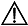

外部网络是指用户已有的网络，相对于VPC中的网络，称之为外部网络。将外部网络资源添加至FusionManager中，便可用于发放虚拟机和创建VPC中的直连网络。同时能够作为弹性IP等业务所需的弹性IP地址池。
创建外部网络
创建外部网络前，要求已在交换机上配置用于创建外部网络的VLAN或子网，且已经将使用的VLAN添加到VLAN池中。
 注意：
FusionManager上创建的外部网络会默认共享给所有使用当前OpenStack实例的VDC，VDC用户可以通过安全组对外部网络中的虚拟机配置隔离规则，但是仍可能存在安全隐患，建议在高安全要求的场景下谨慎使用。
在界面，选择一个OpenStack实例，在“外部网络”界面，单击。